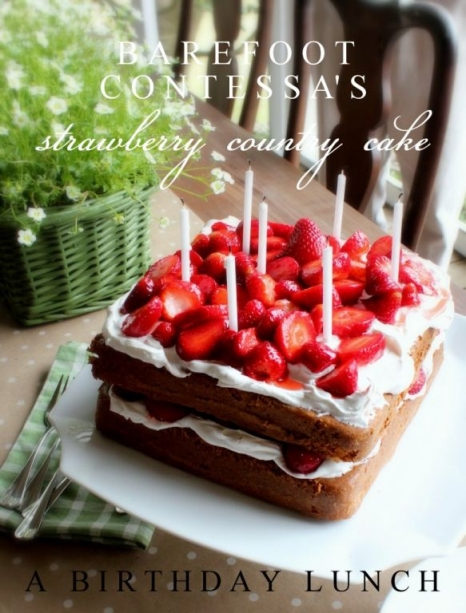
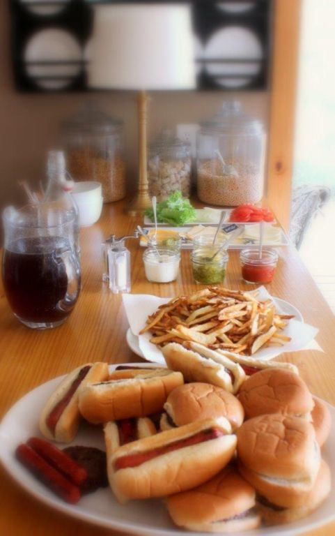
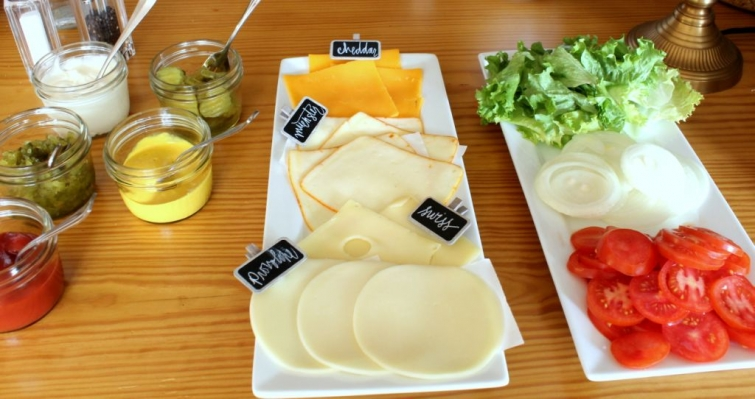

.png)
.PNG)
.PNG)
.PNG)
.PNG)
.PNG)
.JPG)
.JPG)
.PNG)
.PNG)



Before the last bit of the month of March is gone, I thought you might enjoy seeing our lunch for my mom’s March birthday. (Yes, I am cutting it mighty close to the end of the month!) It was a casual Sunday afternoon meal…
just hotdogs, hamburgers, and home made fries …
with an assortment of toppings.

I used our plain white dishes, green gingham napkins, and put a small serving of ketchup and hamburger dill pickles at each place setting. The kraft paper containers for the fries came from Hobby Lobby, and I lettered everyone’s name on them. I also put a small amount of parchment paper inside each container because I wasn’t sure how much grease would be absorbed by the paper.

The centerpiece was a few plants in one of the porch baskets with a paper banner strung on twine. I just cut out black cardstock for it and wrote the letters in chalk.
Our children were my parents’ first grandchildren. So when our oldest began talking, my mother did NOT want to be called Granny, Grandma, Grandmother, or anything like that. Her name is Betty, so she wanted to simply be called “B.” (not Aunt B..as in the Andy Griffith variety. 🙂 ) Anyway, that makes Happy B-Day mean more than just Happy Birthday.
Neither of my parents eat chocolate (imagine that!) which eliminated a large portion of my cake recipes. Since strawberries are so bountiful right now, I thought a strawberry shortcake would make a delicious and pretty birthday cake for the occasion. I used the Barefoot Contessa’s Strawberry Country Cake recipe, available here. It turned out well but not sweet enough for my tastes. My mother does not eat dairy products so I used Cool Whip instead of real whipping cream. That is probably what made the difference…although I believe a cake for strawberry shortcake is not really supposed to be sweet anyway.
We moved out to the porch for dessert.
For some crazy reason, the candles wouldn’t blow out! And they weren’t trick candles. We all got tickled!
My husband was able to help her finish blowing them out, and we then enjoyed the dessert. The recipe calls for splitting the layers and using only one layer for making the actual cake, but since this was a birthday cake, I thought it needed to be tall, right? 🙂 It was a nice finish to a casual birthday lunch.
In other news, I cannot believe how many of you love daffodils! From all the comments in Saturday’s post, we should start some sort of club…Daffodil Lovers Anonymous. 🙂
Spring Break is in full swing here. Yesterday we traveled to a small town (well actually two small towns) that had gorgeous homes, and I took a zillion pictures for you. Here is a sneak peek of one of them:
There will be more coming for you soon. 🙂
Until next time…


.PNG)
Well that’s it! You should do some online birthday decorating advice because you just bring it all together and make it look effortless. Your mom should feel very special. A happy belated birthday from Canada! If I remember, I think I shall make a square birthday cake like this one for my husband’s and daughter’s birthdays in July.
————————————————————-
Ha ha..very funny! I don’t think I could fit another thing on my plate here. I will pass on your belated b-day wishes to my mom. thanks! I thought the square cake pans made it look better. July will be a great time to make that cake. Your family should love it!
Kelly
Now I know where you get the good genes….from your mom. She is very pretty and young looking, just like you are! My daddy always wants strawberry shortcake for his May birthday. I like how it looks made in the square pans. (My daughter named my mom Geebeejimba so when I have grandchildren I think I will have them call me GeeBee.)
————————————————————
What a kind compliment for both me and my mom! My mom is tall and has always liked to drink milk and exercise – sadly neither of which apply to me. LOL Geebeejimba – what a name!!!! It’s fun to pronounce, but I do think I like GeeBee better (definitely easier to say.)
Kelly
Hamburgers and Hotdogs are two of my favorite things!! LOVE all your tablescapes. And that Strawberry Cake…wish I could have a piece of it!! You and your mom must have great genes, you both are so pretty!!
—————————————————————
Wish I could serve you a slice of that cake! Thank you for all your comments. I so appreciate your sweet words!
Kelly
I love your birthday dinner table! I am so pleased to see your use of color… I have endured the trend of greys and whites and tans long enough! So, bravo! Question: where did you get those darling numbered plates? I adore them and would love to find some for my own birthday table… any suggestions? Thanks again for sharing your talents… bring on the COLOR! 😉
G
Queen Creek, AZ
—————————————————————
Amen about color!! I have definitely NOT followed the no color trend here. I want our home to reflect life, and life is full of color. 🙂 The plates came from Target a few years ago. You could check ebay to see if you can find them there, or you could make your own using one of those pens that you write with on dishes and then bake the dishes in the oven for a little while. Michaels and Hobby Lobby carry them. I hope you can find or make some for your table.
Thank you for reading and taking the time to comment Gabrielle. I appreciate it!
Kelly
Kelly –
I have a birthday party that I am hosting for my family at the end of the month and I think you just helped me come up with a menu. Thank you! Do you have a good recipe for homemade french fries that you can share? The picture of the ones you made look delicious. Thanks! Have a great Spring Break and Happy Belated Birthday to your mom.
– Sarah
———————————————————-
I am so glad I could help you settle on a menu! Hamburgers and french fries are always appreciated and enjoyed by our crew. I normally make our fries very much like our homemade chips, but I do peel the potatoes for fries. (I don’t for the chips.) Then I chop up an onion and throw it in with the potatoes while they are in the hot oil. It gives them a great flavor, and some people like to put the fried onion pieces on their burgers or hotdogs. I did not get to do that with this lunch because we were down to one onion and needed it chopped (fresh) for the burgers and hotdogs. One of the restaurants where we enjoy eating serves battered fries…the fries are double dipped in an egg milk mixture, dunked in flour, dipped in the egg milk mixture again, and dipped in the flour again before frying in hot oil. They are the ultimate in crunch – and I’m sure not very healthy – but yummy. You might want to give that a try sometime.
Enjoy your party!
Kelly
Ok, I swear you have a book deal in the near future Kelly. Your simple little touches are a weekly event. Semi-monthly event? Your family is so lucky and well taken care of for sure. Belated birthday wishes to your mom. Her cake looked delicious. I am not called granny by my twin grandchildren either. It is Nonni. As much as I was embracing finally being a grandparent, well, I was not embracing the “G” names. Love your cute banner and yes, do tell, where did you find those cute paper fry holders. Yum, love homemade fries. They are the best!
Debra
————————————————————
Haha. Very funny Debra. No book deal here. I am doing well to keep up the blog! My mom will appreciate your birthday wishes. Glad you liked the little banner. The french fry holders came from Hobby Lobby…the land of all things cute! 🙂
Kelly
Happy Belated Birthday to your beautiful Mom. Casual is not in your vocabulary girl. Loved everything about the table, the plates, the french fry containers used as place cards. You are too, too cute. I so look forward to your post. They make me not only happy but inspire me to do things around my home. Thank you for loads of enjoyment.
————————————————————-
I will pass on your birthday wishes and compliment to my mom, Cindy. Your comments give ME enjoyment. So thank YOU for them!
Kelly
What a blessing to be able to celebrate birthdays together. And your mother seems to be gracious, kind, and gentle–very lovely. You’ve given me an idea for this weekend–burgers, fries, and strawberry cake. Yummy!
Funny thing-names for grandmothers. My children had to call their paternal grandmother Nanna; they were her first grandchildren. However, they made up the name, Mee-Me and sometimes MeMaw, for my mother; after 8 grandchildren calling her “Grandma” she kinda liked their name for her. My daughter decided on my name for her boys and they call me Nonni. All in all what’s in a name? ?A rose by any other name…”. Well, you know the rest.
————————————————————–
Yes, you should do burgers, fries, and a strawberry cake this weekend! (And outdoors if you can. It is supposed to rain here again on Saturday.) My husband’s mother is Nanny..so no Grandma anywhere in our group. I LOVE Nonni…it’s unusual but endearing.
Kelly
You have no idea how much I love this post.Growing up,this was always birthday week. My mother’s birthday was March 31 and my father’s was April 5. My sister and I would pick daffodils and use whatever other festive ideas our little brains could come up with. We would leave the decorations up all week for both celebrations. My father passed away in 1995 and my mom just 4 years ago. This time of year always reminds me of them.
———————————————————–
I am glad that I could bring back happy memories for you Martha. I am so sorry they are no longer with you, but it sounds like you have sweet thoughts to remember them by. My sister and father have birthdays 5 days apart in April, and my daughter, son, and I are all within a week and a half of each other, so we know about shared birthday weeks here as well. How wonderful that you and your sister decorated with sunshine-y yellow daffodils…what a great flower for a celebration!
Kelly
Happy Happy Birthday to your mom! She is cute like you! The cake looked good! My best buddy and her husband came over for her birthday (hey there Josie) and I made the chocolate cake that is listed on the back of the Hershey cocoa container. I doubled the icing recipe….no dieters here! We drank a few too many mimosas also!
I had my mom’s first grandchildren also and she DID not want to be called anything that started with a G so she is Joycee to all the grandkids. 25 years later I knew JUST how she felt so I am a “Mimi”.
Have a grand spring break. It was 72 in my neck of the woods today. My husband made me a window box today that hopefully I can plant red geraniums in the near future.
————————————————————–
You are too kind! Doubled the frosting…that is MY kind of cake and chocolate too! Sounds divine. 🙂 Hooray spring has arrived in your area. Love a windowbox full of geraniums. If that doesn’t scream summer, I don’t know what does.
Kelly
Happy Birthday to your sweet mom! What a great looking lunch, and the strawberry cake looks delicious! I thought about you today. My husband & children took me to Deano’s for lunch for my birthday. Try the homemade potato chips if you haven’t – they’re really good. Hope you have a great week.
—————————————————————–
We thought about Deano’s just the other night! I will try their homemade chips since I love salty potatoes. Thanks for the recommendation. (But their desserts are so good I don’t know if I want to fill up that much…have to leave room for the best part of the meal!) A belated happy birthday to you, Teresa!
Kelly
Casual lunches…dinners…are my favorite. Great suggestions, 😉
————————————————————
My favorite too, Donnamae. I am glad you liked the lunch ideas. 🙂
Kelly
Kelly,
Your mom is darling. What a fun birthday dinner. I love burgers and fries. The fry holders as place cards are a great idea. The table looks wonderful. This post made me hungry!
xo,
Karen
————————————————————–
I think I could live on burgers and fries everyday if I had to. You can top burgers with such a variety of things, it would be easy to go 2 weeks without repeating your toppings. I am glad you liked the idea of the french fry holders. Easy-peasy!
Kelly
now kelly “casual dinner” should not be in your vocabulary….nothing you do is “casual”…it’s all spectacular! when we have hamburgers, hot dogs, etc. it’s every man (or woman) for themselves around here. i don’t have a lot of counter space so we just help ourselves from the little counter space i do have and the stove…now THAT’S casual! all kidding aside, your birthday supper for your mom looks wonderful and so does she. please wish her a belated happy birthday from one of your fans (i mean friends)!
————————————————————–
Judy you crack me up!! Everyone for themselves is often the philosophy around here too. I will pass along your birthday wishes to my mom. Hope you are having a great week.
Kelly
What a sweet B-day celebration! Your mother looks like she could be your sister! Lovely cake idea—think I will make it for my youngest during the strawberry season. Thank you for sharing this special family time and a picture of your mom.
————————————————————
Louvina, you just made my mom’s day with your comment! 🙂 If you make that cake for your family, I know they will enjoy it. Fresh sweetened strawberries are sooo yummy!
Kelly
Aren’t family lunches the best? We get together for lunch on every second Sunday of the month with my family. We all look forward to it and have such a good time. Your lunch looks yummy. Those little fry containers are cute!
————————————————————–
What a great idea to set aside a specific time on a regular basis. Love that! Thank you for the compliments. I could not resist those little containers when I saw them in the store. My wheels were turning with ideas!
Kelly
What a lovely casual celebration, Kelly! I think the food looks yummy and I love the Happy B-day banner in the planter basket. Enjoy your Spring break!
———————————————————–
Thank you Dawn. It was a nice little celebration. Just wish our daughter had been here to enjoy it all with us too. I am definitely enjoying my break.
Kelly
That cake looks delicious Kelly!! I hope your mom enjoyed it and y’all had fun celebrating her birthday.
————————————————————-
It was delicious, Kayleigh. How can you go wrong with fresh strawberries?! Yum. We all had a very nice (and filling!)time. 🙂
Kelly
p.s. Thank you for sending me the pinterest link. Loved that image you sent!
A fun party for a beautiful lady. Belated happy birthday to your mom Kelly. Love your little banner in the flowers. Blessings, Becky
———————————————————-
I will give her your birthday wishes, Becky. Glad you liked that little banner!
Kelly